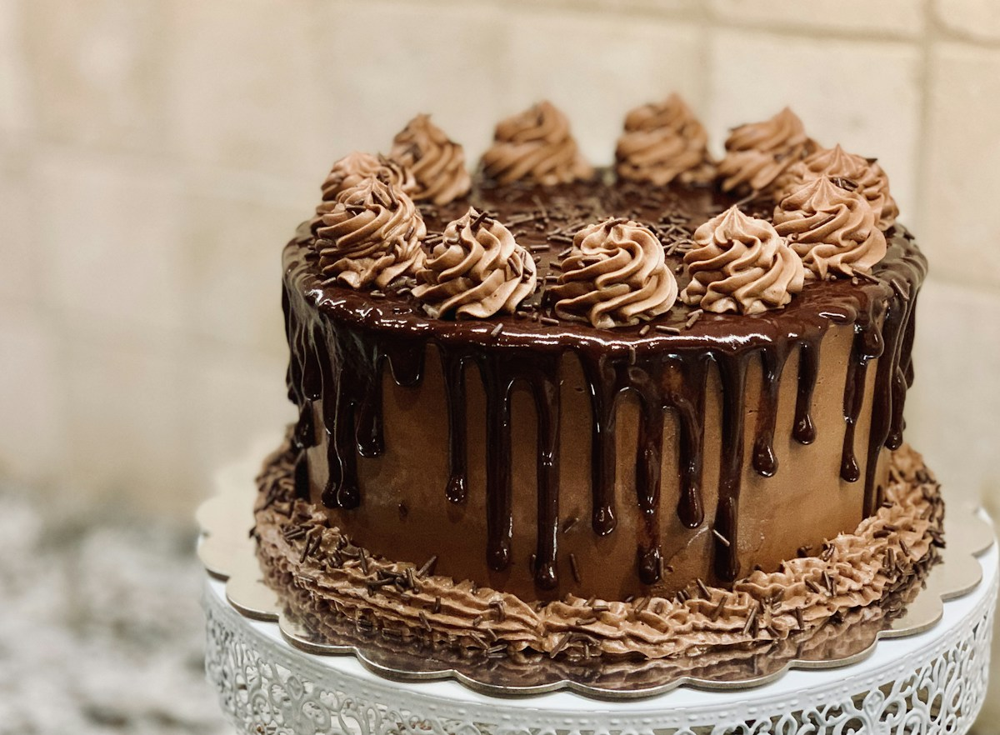

Custom theme cakes
A favourite theme, a special idea, a celebration that feels like you. Share your inspiration directly with the baker.
Discuss your ideaA LITTLE SWEETNESS. A BIG OCCASION.
Custom theme cakes, celebration cakes and pastries from Delectably Baked in Hornby, Christchurch.
Bring your occasion and ideas. Ask the baker about designs, availability and collection.

SOMETHING TO LOOK FORWARD TO
Explore the kinds of bakes shared by Delectably Baked, then speak with the baker about your plans.
A favourite theme, a special idea, a celebration that feels like you. Share your inspiration directly with the baker.
Discuss your ideaMark the moments worth gathering for. Ask about available cake designs, sizes and flavours for your occasion.
Plan a celebrationSomething sweet for the table. Check the business’s Facebook page and enquire about the current selection.
See recent updatesFROM HORNBY, WITH A SWEET TOUCH
Delectably Baked is a home-based cake business in Hornby, Christchurch, specialising in custom theme cakes, celebration cakes and other pastries.
For real examples of the baker’s work and the latest updates, visit the business’s Facebook page. Enquiries, designs, ingredients, dietary requirements and collection arrangements should be confirmed directly with the business.
Meet Delectably Baked on Facebook ↗WHAT ARE YOU CELEBRATING?
Share your date, the occasion and what you have in mind.
Availability and prices are confirmed by the baker.
This preview does not accept orders or payments. Contact links open the business’s publicly listed channels.